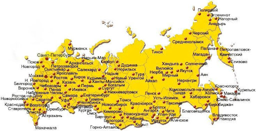

1. Москва
2. Санкт-Петербург
3. Новосибирск
4. Екатеринбург
5. Нижний Новгород
6. Казань
7. Челябинск
8. Омск
9. Самара
10. Ростов-на-Дону
11. Уфа
12. Красноярск
13. Воронеж
14. Пермь
15. Волгоград
16. Краснодар
17. Саратов
18. Тюмень
19. Тольятти
20. Ижевск
21. Барнаул
22. Ульяновск
23. Иркутск
24. Хабаровск
25. Ярославль
26. Владивосток
27. Махачкала
28. Томск
29. Оренбург
30. Кемерово
31. Новокузнецк
32. Рязань
33. Астрахань
34. Набережные Челны
35. Пенза
36. Киров
37. Липецк